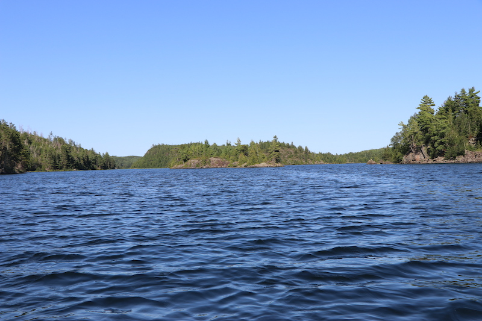

My Aunt and Uncle started a tradition in my family, where every year they would take my siblings and I backpacking. Once we turned 8 we were allowed to
join the trip, and since my two older brothers, Nick and Caleb, were four and six years older than me I had been waiting to join these summer
trips for as long as I could remember. I remember how on Christmas morning before I turned eight I opened a present from my aunt and uncle and found a
bight blue backpack, along with a sleeping bag signaling that this was the year I finally get to tag along. Then, when July finally rolled
around it was time for my trip.
That year we traveled to Isle Royale National Park, which is a small island on Lake Superior about halfway between Michigan and Canada. After a
9 hour trip to Copper Harbor, we stayed the night at a hotel and spent our last night doublechecking all of our equipment before taking the
ferry across the lake to start our 5 day trip through the woods. The next day we woke up around 5, then after a 3 hours ferry and seeing both
of my brothers get sea sick along the ride, we finally sailed into port. I saw port, but in reality there was a large dock, 3 small wooden buildings, and a public shower and bathroom.
The first building was a service center, the next was a small giftshop, and the last was a restraunt that most people stopped at before setting off
into the woods. Like the classic eight year old, I got chicken tenders as my last nice meal before heafting our packs and setting off into the woods.
Year
Park Name
Location
2008
Isle Royale National Park
Michigan
2009
Pictured Rocks National Lakeshore
Michigan
2010
Isle Royale National Park
Michigan
2011
Procupine Mountains
Michigan
2012
Pictured Rocks National Lakeshore
Michigan
2013
Procupine Mountains
Michigan
2014
Pukaskwa National Park
Canada
2015
Isle Royale National Park
Michigan
2017
Pictured Rocks National Lakeshore
Michigan
2018
The Boundry Waters Canoe Area Wilderness
Minnesota
2019
The Boundry Waters Canoe Area Wilderness
Minnesota
2021
Procupine Mountains
Michigan

What Every Day Was Like
By Ryan Dulak
Each day we would wake up and start a fire, our breakfast would be oatmeal and hot chocolate. Once we finished eating and cleaning our mugs
and silverware, we set up camp. Camps consisted of three, two person tents in a small clearning with a stone firepit at its center. Most campsites were
near a river or less than a mile from the shore, and had an outhouse near by. But once camp was packed up and stuffed into our backpacks, the journey
began. Typically the hike was around 6-10 miles with several detours and breaks along the way. Most campsites were 3-4 miles apart, so you could stop at one
for lunch and go swimming or relax for a little bit. Lunch consited of bagels with peanut butter, beef jerkey, and trail mix or granola bars if you wanted.
Everyone had two water bottles, and a few lemonade packets to change it up if you wanted. Once we finished lunch, we lift our backpacks back on, buckle the
waist strap, and hike the remaining 3-4 miles. Along the way there were plenty of blueberry bushes to stop at, and plenty of lookouts to stop at. Once we arrived
at our campsite, we would quickly set up tents and gather firewood so that we could change and go swimming to wash away the dirt and grime from the trails.
However, Isle Royale is on Lake Superiror, so even though it was the middle of summer, and every day was in the 70s, the water felt like it was barely above
freezing. Most swims were my siblings and I convering ourselves on soap, then sprinting into the lake. Then as soon as we dove in and washed off the soap you
couldn't get out of the lake fast enough before you started shivering. Then we would filter water into our empty waters to be used for cooking. After changing
back into our dirty clothes, we would start a fire so we could boil water, and our dinner were these packets of dried food made by Mountain House. Some of my
favorite food are teriyaki chicken, beef stroganoff, and chicken dumpling soup. After eating and cleaning up we would play cards or tell stories around the
fire. By the time it was dark, everyone was mostly ready to climb into their tents and get ready for the next day.